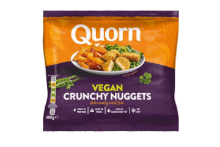
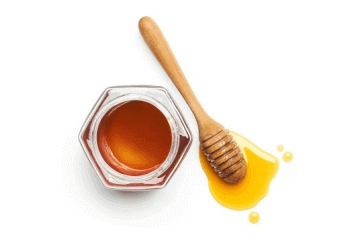

UPSIDE Chicken
Pollo coltivato con ingredienti vegetali, servito in alcuni ristoranti della California.
English | Italiano | Français | Español | Deutsch | 中文 | 日本語 | Bahasa Indonesia | Português | Русский
La fermentazione di precisione consente la produzione di proteine del latte e delle uova e di altri ingredienti utilizzando microrganismi, come lieviti o funghi, al posto degli animali.
Come la carne coltivata e vegetale, le proteine derivate dalla fermentazione sono migliori per il pianeta, le persone e gli animali.
La fermentazione di precisione può ridurre la nostra dipendenza dagli allevamenti lattiero-caseari industriali, così come il loro impatto sul clima, sull’ambiente e sugli animali.

Le proteine risultanti sono identiche a quelle animali prodotte in modo convenzionale e possono essere utilizzate per la produzione di un'ampia gamma di prodotti (formaggio, gelato, latte, burro, proteine in polvere, albumina, ecc).
L'uso di ceppi microbici geneticamente modificati non è nuovo, è stato utilizzato per diversi decenni nel campo della medicina e dell'alimentazione per produrre :
Inoltre, esistono numerosi alimenti fermentati tradizionali:
Tempeh, birra, yogurt, kimchi, crauti e molti altri.

"La seconda domesticazione".
Prima abbiamo addomesticato i macroorganismi (animali e piante).
Ora stiamo iniziando ad addomesticare i microrganismi.
L'evoluzione dall'allevamento di organismi multicellulari all'allevamento di creature unicellulari
ci permette di fare molto di più con molto meno.
L'agricoltura industriale animale è la causa principale del cambiamento climatico: Emette tra il 14% e il 51% delle emissioni di gas serra, più dell'intero settore dei trasporti.
L'agricoltura animale industriale è anche una delle cause principali dei problemi ambientali più urgenti che dobbiamo affrontare:

Ci vogliono 9 calorie per nutrire un pollo, per ottenere 1 caloria di carne.
Cioè, 9 volte più terra, 9 volte più acqua, 9 volte più risorse per caloria rispetto alle proteine vegetali. Con la carne di maiale e la carne di mucca, lo spreco di risorse è ancora peggiore.
Il 77% dei terreni agricoli viene utilizzato per nutrire gli animali per produrre carne, ma questa carne fornisce solo il 30% delle proteine e il 18% delle calorie che le persone consumano.
L'agricoltura animale consuma il 29% dell’acqua agricola e contamina le riserve idriche sotterranee con i liquami.
Si prevede che la domanda di carne raddoppierà entro il 2050. È impossibile nutrire la crescente popolazione mondiale con proteine animali su un solo pianeta.

Il 70% degli antibiotici viene utilizzato negli animali da allevamento.
Il 75% delle malattie contagiose sono di origine zoonotica.
La prossima pandemia sarà probabilmente causata dallo sfruttamento degli animali, proprio come la Covid-19.

I latticini e altri prodotti fermentati di precisione non contengono:

Ogni anno, 75 miliardi di animali da allevamento (polli, maiali, mucche, ecc.) e 2,7 trilioni di animali marini vengono uccisi, per produrre carne, latticini, pesce e uova.
Queste sono le 4 tecnologie principali che definiranno il futuro della produzione alimentare:
Basato su microrganismi, consente di produrre proteine e altri ingredienti (grassi, coloranti, ecc.) utilizzando lieviti e funghi.

Basato sul micelio fungino, consente la produzione di micoproteine di alto valore nutrizionale in tempi brevi. Esempio: Quorn

Basato sulle cellule, permette di produrre carne e pesce bioidentici all'equivalente animale, utilizzando cellule animali che si riproducono in un bioreattore.

Proteine complete e naturali, prodotte da microrganismi non OGM, alimentati con acqua e aria (idrogeno, ossigeno, azoto, carbonio).
"Questa sarà la più grande perturbazione del sistema alimentare dall'invenzione dell'agricoltura".
I prodotti includono alimenti da cellule coltivate, fermentazione di precisione o fermentazione di biomassa.
Pollo coltivato con ingredienti vegetali, servito in alcuni ristoranti della California.

Bevanda con proteine del siero senza animali prodotte tramite fermentazione di precisione.

Burger vegetale contenente eme prodotto tramite fermentazione di precisione.

Preparati per bevande con proteine dell’albume prodotte tramite fermentazione di precisione.


Quaglia coltivata servita in alcuni ristoranti di Singapore e Australia.
Proteine vegetali complete, realizzate con micelio di funghi e fermentazione di biomassa


Scopri il ruolo emergente della fermentazione microbica nella creazione di prodotti proteici alternativi di nuova generazione.
Nel primo semestre 2026 la fermentazione di precisione ha raccolto 100 milioni di €, più dei 97 milioni dell’intero 2025. La carne coltivata ha raccolto 18 milioni, inclusi alimenti per animali. Fonti: gfieurope.org, gfieurope.org
Investimenti privati raccolti da imprese europee (milioni di €). Il 2026 copre solo gennaio–giugno; i dati annuali e semestrali non sono direttamente confrontabili.
Nel 2020–2025 i finanziatori europei hanno destinato 1,3 miliardi di € alla ricerca sulle proteine alternative: 29% alla fermentazione e 9% a carne e prodotti ittici coltivati. I Paesi Bassi hanno assegnato 60 milioni di € a un programma per entrambe le tecnologie. Fonti: gfieurope.org, cellulaireagricultuur.nl
Danone e i partner hanno inaugurato nel 2026 in Francia un impianto condiviso per la fermentazione, con oltre 20 milioni di € investiti. Bel e Standing Ovation hanno annunciato la produzione industriale di caseina; Danone Ventures si è unita a Bel nel finanziamento di 30 milioni di €. Fonti: danone.com, groupe-bel.com, standing-ovation.co
Vivici, sostenuta da Fonterra, ha raccolto 32,5 milioni di € nel 2025 e ricevuto 12,5 milioni di finanziamenti UE nel 2026. Il suo futuro partner produttivo negli USA aveva ancora bisogno di fondi per aprire nell’ottobre 2026. Fonti: invest-nl.nl, agfundernews.com, agfundernews.com
Il gruppo della carne JBS ha annunciato un piano da 100 milioni di dollari comprendente la spagnola BioTech Foods, uno stabilimento e un centro di ricerca in Brasile. Il centro ha aperto nel 2026; l’operatività dello stabilimento spagnolo non è confermata. Believer Meats, sostenuta da Tyson, ha completato un impianto ma ha poi cessato le attività. Fonti: api.mziq.com, cnnbrasil.com.br, ag.ingredion.com
La Cina ha incluso la carne coltivata e tecnologie correlate nel piano di ricerca agricola 2021–2025. Secondo la FAO, nel 2021 rappresentava il 36% del consumo apparente mondiale di alimenti animali acquatici. Una stima pubblicata nel 2021 attribuiva alla Cina il 28% del consumo mondiale di carne. TIME. Fonti: nyncj.cngy.gov.cn, digitallibrary.un.org
Rapporti 2026 sugli sviluppi del 2025. Rapporti e webinar sono in inglese.
La fermentazione di precisione e la carne coltivata possono contribuire ad affrontare le sfide della produzione alimentare, ma servono maggiori investimenti per far avanzare la ricerca, ridurre i costi e aumentare la produzione.
I governi possono finanziare la ricerca ad accesso aperto, sostenere le startup e creare strutture condivise che facilitino l’arrivo sul mercato di nuovi prodotti. Condividere conoscenze e incoraggiare la collaborazione può aiutare più ricercatori e imprese a progredire.
Anche norme chiare e basate sulla scienza sono essenziali per garantire la sicurezza alimentare e offrire agli innovatori un percorso prevedibile verso il mercato.
Le proteine alternative potrebbero contribuire ad affrontare più sfide contemporaneamente, tra cui il cambiamento climatico, i danni ambientali e il benessere animale. Gli investimenti pubblici e privati possono aiutare a trasformare questo potenziale in scelte alimentari pratiche e accessibili.
Chiedi ai tuoi rappresentanti di sostenere la ricerca e gli investimenti pubblici.
La fermentazione di precisione, la fermentazione di biomassa e la carne coltivata hanno bisogno di maggiori investimenti per raggiungere il loro pieno potenziale. Investitori, decisori politici e finanziatori della ricerca possono contribuire a far progredire queste tecnologie.


 La trasformazione della carne: la prossima rivoluzione agricola
La trasformazione della carne: la prossima rivoluzione agricola Ci sarà qualcuno disposto a mangiare carne vegetale e carne coltivata?
Ci sarà qualcuno disposto a mangiare carne vegetale e carne coltivata? Humbird o inganno: i progressi della carne coltivata sfidano gli scettici
Humbird o inganno: i progressi della carne coltivata sfidano gli scettici Energie rinnovabili, IA e proteine alternative
Energie rinnovabili, IA e proteine alternative Dobbiamo parlare della fermentazione di precisione
Dobbiamo parlare della fermentazione di precisione Cosa ci insegnano le rivoluzioni passate sull’agricoltura cellulare e le proteine alternative
Cosa ci insegnano le rivoluzioni passate sull’agricoltura cellulare e le proteine alternative Coltiva il tuo palato per un nuovo tipo di alimento
Coltiva il tuo palato per un nuovo tipo di alimento Fermentazione di precisione: il futuro dell’alimentazione
Fermentazione di precisione: il futuro dell’alimentazioneEsplora la directory globale delle aziende di proteine alternative del Good Food Institute.